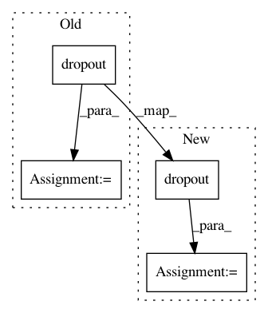

144b5afdd5d9262a5a9a9fdd9afa56a14b629ba1,texar/modules/encoders/transformer_encoders.py,TransformerEncoder,_build,#TransformerEncoder#Any#Any#,114
Before Change
num_units=self._hparams.embedding.dim,
causality=False,
scope="multihead_attention")
enc = tf.layers.dropout(
enc,
rate=self._hparams.dropout,
training=context.is_train())
self.enc += enc
poswise_network = FeedForwardNetwork(hparams=self._hparams["poswise_feedforward"])
with tf.variable_scope(poswise_network.variable_scope):
enc = layers.layer_normalize(self.enc)
enc = poswise_network(enc)
enc = tf.layers.dropout(
enc,
rate=self._hparams.dropout,
training=context.is_train())
self.enc += enc
if not self._built:
self._add_internal_trainable_variables()
self._built = True
After Change
causality=False,
scope="multihead_attention"
)
self.enc = self.enc + tf.layers.dropout(
selfatt_output,
rate=self._hparams.dropout,
training=context.is_train()
)
poswise_network = FeedForwardNetwork(hparams=self._hparams["poswise_feedforward"])
with tf.variable_scope(poswise_network.variable_scope):
sub_output = tf.layers.dropout(
poswise_network(layers.layer_normalize(self.enc)),
rate=self._hparams.dropout,
training=context.is_train())
self.enc = self.enc + sub_output
self.enc = layers.layer_normalize(self.enc)
if not self._built:
self._add_internal_trainable_variables()
In pattern: SUPERPATTERN
Frequency: 4
Non-data size: 4
Instances
Project Name: asyml/texar
Commit Name: 144b5afdd5d9262a5a9a9fdd9afa56a14b629ba1
Time: 2018-03-19
Author: zhiting.hu@petuum.com
File Name: texar/modules/encoders/transformer_encoders.py
Class Name: TransformerEncoder
Method Name: _build
Project Name: OpenNMT/OpenNMT-py
Commit Name: 7dcc162114ac1d3c3846150d5c600f4d8683fa73
Time: 2018-02-16
Author: srush@seas.harvard.edu
File Name: onmt/Models.py
Class Name: InputFeedRNNDecoder
Method Name: _run_forward_pass
Project Name: asyml/texar
Commit Name: 144b5afdd5d9262a5a9a9fdd9afa56a14b629ba1
Time: 2018-03-19
Author: zhiting.hu@petuum.com
File Name: texar/modules/decoders/transformer_decoders.py
Class Name: TransformerDecoder
Method Name: _build
Project Name: OpenNMT/OpenNMT-py
Commit Name: 7dcc162114ac1d3c3846150d5c600f4d8683fa73
Time: 2018-02-16
Author: srush@seas.harvard.edu
File Name: onmt/Models.py
Class Name: StdRNNDecoder
Method Name: _run_forward_pass